trimAl
Tool for automating removal of spurious sequences or poorly aligned regions from a multiple sequence alignment
Class Hierarchy
Go to the textual class hierarchy
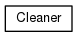
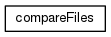
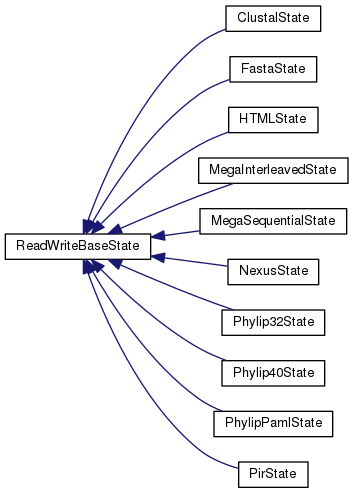
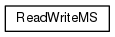
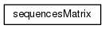
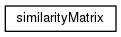
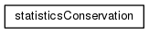
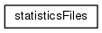
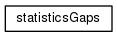
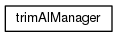
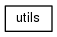
Generated by
1.8.13
 1.8.13 1.8.13
1.8.13 1.8.13